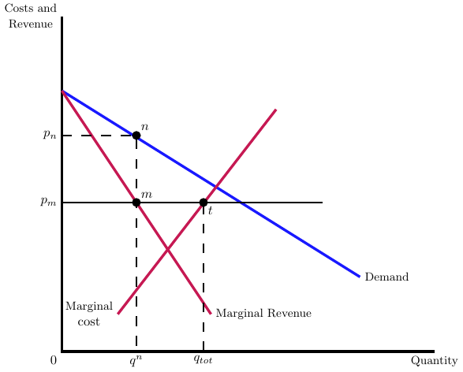

15 Two-price Market
Recall our original discussion of prices from the prior chapter, wherein health care providers commonly encounter two distinct pricing scenarios. Firstly, there is a predetermined price set by government programs such as Medicare and Medicaid, denoted as \(p_m\). Secondly, providers engage in negotiations with private insurers to establish a price, referred to as \(p_n\). The prices set by public insurers (\(p_m\)) may influence the negotiated price with private insurers (\(p_n\)). For example, providers may employ the Medicare price as a reference point during negotiations with insurers. In this chapter, we’ll focus on how these two types of markets interact for a single provider.
15.1 Assuming Profit Maximization
If the provider behaves as a profit maximizing firm, then their profit maximizing choice of quantity is to first sell to “private” market as long as marginal revenue exceeds the public price, and then switch to “public” market otherwise, and sell to the point where price equals marginal cost. This is depicted graphically in Figure 15.1.
15.2 Assuming Not-for-profit
As discussed when we first introduced a not-for-profit firm’s objective function, we don’t know the general solution for the private price for a NFP hospital; however, we can say something about how it varies with the public price. Recalling the NFP hospital’s objective function, \[\max_{p_{i,j}} U\left( \pi_{j} = \pi_{i,j} + \pi_{g,j},D_{i,j}, D_{g,j} \right),\] we can take the first order condition wrt \(p_{i}\) and use the implicit function theorem. This is reflected in Equation 15.1, which shows the derivative of the private price, \(p_{i}\), with respect to the public price, \(p_{g}\) using the implicit function theorem:
\[\frac{\mathrm{d}p_{i}}{\mathrm{d}p_{g}} = - \frac{U_{11}\pi_{1}^{i}\pi_{1}^{g} + \frac{\mathrm{d}D_{i}}{\mathrm{d}p_{i}}U_{12}\pi_{1}^{g}}{\frac{\mathrm{d}^{2}U}{\mathrm{d}p_{i}^{2}}} \tag{15.1}\]
The idea that hospitals will increase private prices following a decrease in the public price is called cost shifting. The presence of cost-shifting somewhat assumes that hospitals could have increased private prices earlier but chose not to. This is technically possible if, for example, hospitals have very low margins (possibly negative if the public price is too low), the insurer wants to sustain the hospital for competition purposes, or the hospital has diminishing returns to profits. However, economists usually see this as a smaller effect than most policy makers or health services researchers. The argument over cost-shifting can actually get pretty intense, which some academics adamant that it can’t happen and others adamant that it is a strong force.